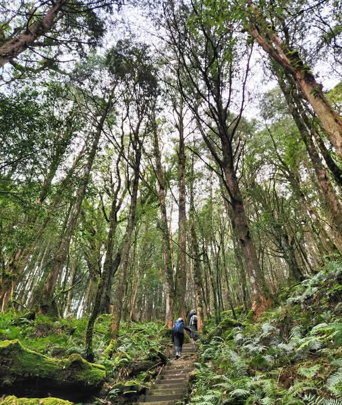

中級訓練
八仙山｜挑戰谷關七雄之首

八仙山位於台中市和平區， 海拔約 2,366 公尺，是谷關七雄中海拔最高的山岳。 登山途中穿越茂密森林與陡峭山徑， 需要良好的心肺耐力與下肢肌力。 八仙山也是訓練長時間登山與累積爬升能力的熱門路線。
登山路線資訊
- 地點：台中市和平區
- 海拔：約 2,366 公尺
- 分類：谷關七雄之首
- 難度：中級訓練（偏高）
- 常見路線：八仙山森林遊樂區登山口往返
- 路線特色：森林山徑、長距離爬升、陡坡
- 建議對象：具備長時間登山經驗與良好體能者
登山裝備建議
建議穿著抓地力良好的登山鞋， 攜帶登山杖、足夠飲水、行動糧、 雨具及保暖衣物。 由於爬升量較大，應依個人體能安排休息， 並預留充足的下山時間。
登山注意事項
八仙山部分路段坡度較陡， 長時間下坡容易造成膝蓋與大腿疲勞。 建議事先下載離線地圖， 確認天氣、步道開放狀態及入園規定。 避免在天候不佳或體能不足時勉強登頂。